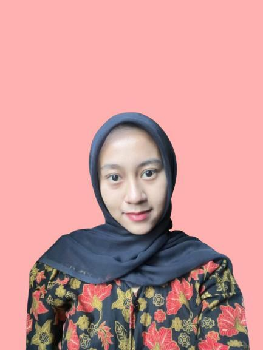

Perkenalkan, nama saya Firzana Bilqis Serenity. Saya lahir pada 18 Juni 2007 dan saya berasal dari Boyolali. Saya menempuh pendidikan sekolah menengah atas di MAN 2 Boyolali. Selama bersekolah, saya mendapatkan berbagai pengalaman dan pengetahuan yang menjadi bekal bagi saya untuk melanjutkan pendidikan ke jenjang perguruan tinggi.
Saat ini, saya sedang menempuh pendidikan di Universitas Sebelas Maret (UNS), tepatnya di Program Studi Pendidikan Teknik Informatika dan Komputer (PTIK). Saya memilih program studi ini karena tertarik dengan bidang teknologi dan ingin mempelajari lebih dalam mengenai informatika sekaligus dunia pendidikan. Saya berharap selama kuliah di PTIK UNS, saya dapat mengembangkan kemampuan, menambah pengalaman, dan mempersiapkan diri untuk masa depan.